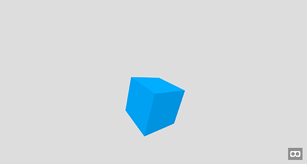
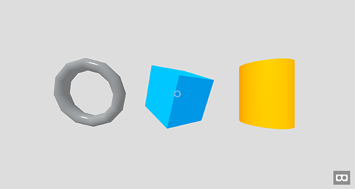

{{GamesSidebar}}
The WebVR and WebGL APIs already enable us to start creating virtual reality (VR) experiences inside web browsers, but the community is still waiting for tools and libraries to appear, to make this easier. Mozilla’s A-Frame framework provides a markup language allowing us to build 3D VR landscapes using a system familiar to web developers, which follows game development coding principles; this is useful for quickly and successfully building prototypes and demos, without having to write a lot of JavaScript or GLSL. This article explains how to get up and running with A-Frame, and how to use it to build up a simple demo.
The current version of A-Frame is 0.3.2, which means it’s highly experimental, but it already works and you can test it right away in the browser. It runs on desktop, mobile (iOS and Android), and Oculus Rift, Gear VR and HTC Vive.
A-Frame is built on top of WebGL, and provides pre built components to use in applications — models, video players, skyboxes, geometries, controls, animations, cursors, etc. It is based on the entity component system, which is known in the game development world, but it targets web developers with a familiar markup structure, manipulable with JavaScript. The end result is 3D web experiences, which are VR-enabled by default.
Let’s start by setting up an environment to create something with A-Frame. We’ll then build up a demo and run it. You should start off by:
The first step is to create an HTML document — inside your project directory, create a new index.html file, and save the follow HTML inside it:
<!doctype html>
<html>
<head>
<meta charset="utf-8">
<title>MDN Games: A-Frame demo</title>
<script src="aframe.min.js"></script>
</head>
<body>
<!-- HTML goes here -->
</body>
</html>This contains some basic information like the document charset and {{htmlelement(“title”)}}. The {{htmlelement(“script”)}} element includes the A-Frame framework in the page; we will write our example code inside the {{htmlelement(“body”)}} element.
A scene is the place where everything happens. When creating new objects in the demo, we will be adding them all to the scene to make them visible on the screen. In A-Frame, the scene is represented by a Scene entity.
Note: An Entity is any element — it can be an object like a box, cylinder or cone, but it can also be a camera, light or sound source.
Let’s create the scene by adding an <a-scene> element inside the <body> element:
Adding the cube to the scene is done by adding a simple <a-box> element inside the <a-scene> element. Add it now:
It contains a few parameters already defined: color, position and rotation — these are fairly obvious, and define the base color of the cube, the position inside the 3D scene, and the rotation of the cube.
Note: The distance values (e.g. for the cube y position) are unitless, and can basically be anything you deem suitable for your scene — millimeters, meters, feet, or miles — it’s up to you.
A sky box is a background for the 3D world, represented by an <a-sky> element. In our case we will use a simple color, but it could also be an image, etc. Looking around would give an impression of being inside an open sky, a wooden barn — wherever you like! Add the following HTML before the <a-cube> element:
At this point, if you save the code and refresh your browser you can already see the cube on the screen with our custom background:

Here’s the code we have created so far:
{{JSFiddleEmbed(“https://jsfiddle.net/end3r/m85148b4/”,"“,”350")}}
You can also check it out on GitHub.
A-Frame takes care of setting up everything you need:
The controls are already working: you can use the mouse for looking around and the keyboard for movement (try the
W
,
A
,
S
, and
D
keys.)
There’s even an “Enter VR mode” button in the bottom right corner of the screen, to allow you to shift to full screen, stereoscopic image viewing if you have the necessary VR hardware set up and ready.
A camera entity can be created by adding an <a-camera> element to the scene. We can set the position of the camera explicitly and move it back a little bit from the center of the scene, so we’ll be able to see the shapes. Add this just before the closing </a-scene> element:
<a-camera
position="0 1 4"
cursor-visible="true"
cursor-scale="2"
cursor-color="#0095DD"
cursor-opacity="0.5">
</a-camera>We’ve also defined a cursor for the given camera, using the cursor-* attributes (by default it is invisible.) — we’ve set its scale so it will more easily visible, its color, and some opacity so it won’t completely covering the objects behind it.
The basic light types in A-Frame are directional and ambient. The first type is a directional light placed somewhere on the scene while the second one reflects the light from the first type, so it looks more natural; this can be set globally. Add the new code below your previous additions — this uses the standard <a-light> element:
<a-light
type="directional"
color="#FFF"
intensity="0.5"
position="-1 1 2">
</a-light>
<a-light
type="ambient"
color="#FFF">
</a-light>The directional light has a white color, its intensity is set to 0.5, and it is placed at position -1 1 2. The ambient light only needs a color, which is also white.
We have a cube on the scene already; now let’s try adding more shapes. We are not limited to the default entities like <a-cube> — using <a-entity> we can create custom advanced shapes. Let’s try adding a torus — add this element below the previous code:
<a-entity
geometry="
primitive: torus;
radius: 1;
radiusTubular: 0.1;
segmentsTubular: 12;"
rotation="10 0 0"
position="-3 1 0">
</a-entity>Our entity has a torus primitive, which represents its shape. We are passing some initial variables to that shape: the radius of the outer edge of the torus, the radius of the tube, and number of segments along the circumference of the tube face respectively. Rotation and position are set in the same way as we saw earlier.
The torus is now visible on the scene, but its color doesn’t look very good — this is because we have to create a material to define the appearance of the entity. Edit the <a-entity> defining the torus to look like the following:
<a-entity
geometry="
primitive: torus;
radius: 1;
radiusTubular: 0.1;
segmentsTubular: 12;"
material="
color: #EAEFF2;
roughness: 0.1;
metalness: 0.5;"
rotation="10 0 0"
position="-3 1 0">
</a-entity>In the new material attribute, we set up the color of the material, then its roughness (a rougher material will scatter reflected light in more directions than a smooth material) and metalness (how metallic the material is).
It is possible to populate the scene with entities created using JavaScript too, so let’s use it to add a third shape, a cylinder. Add a new {{htmlelement(“script”)}} element at the end of the <body> element, just after the <a-scene> element, then add the following JavaScript code inside it:
var scene = document.querySelector('a-scene');
var cylinder = document.createElement('a-cylinder');
cylinder.setAttribute('color', '#FF9500');
cylinder.setAttribute('height', '2');
cylinder.setAttribute('radius', '0.75');
cylinder.setAttribute('position', '3 1 0');
scene.appendChild(cylinder);We’re getting a reference to the scene handler first, then we create the cylinder element as an A-Frame entity. After that it’s all about setting the proper attributes: color, height, radius and position. The last line adds the newly created cylinder to the scene. That’s it — you’ve created three different shapes with A-Frame! Here’s how it looks right now:

It is impressive to be able to create such a scene with just a few lines of HTML and JavaScript.
We’ve already used rotation and position to move the shapes on the scene, and we can also scale them. These attributes can be manipulated to create the illusion of animation.
There’s a special <a-animation> entity that can help us animate elements. Add the <a-animation> element seen below to the <a-box> element as a child, as shown:
<a-box
color="#0095DD"
rotation="20 40 0"
position="0 1 0">
<a-animation
attribute="rotation"
from="20 0 0"
to="20 360 0"
direction="alternate"
dur="4000"
repeat="indefinite"
easing="ease">
</a-animation>
</a-box>As with any other entities, you can define key properties for the animation. We’ll be animating the rotation attribute from 20 0 0 to 20 360 0, so it will do a full spin. The animation direction is set to alternate so the animation will be played forward, and then back. The duration is set to 4 seconds, and it will be repeated indefinitely. The animation uses ease for easing, with tween.js being implemented internally.
We can also add animation to entities with custom geometry like the torus, in much the same way. Add the following <a-animation> element to your torus:
<a-entity
geometry="
primitive: torus;
radius: 1;
radiusTubular: 0.1;
segmentsTubular: 12;"
material="
color: #EAEFF2;
roughness: 0.1;
metalness: 0.5;"
rotation="10 0 0"
position="-3 1 0">
<a-animation
attribute="scale"
to="1 0.5 1"
direction="alternate"
dur="2000"
repeat="indefinite"
easing="linear">
</a-animation>
</a-entity>The attribute we want to animate for the torus is scale. The initial, default scale is 1 1 1, and we’re going to animate it to 1 0.5 1, so the y axis will be scaled from 1 to 0.5. The easing we’re going to use is linear. By setting the direction to alternate the scale will be animated to 0.5, and then animated back to 1 during 2 seconds. Again, the animation is being repeated indefinitely.
We could use the <a-animation> to change the position of the third shape, or we could use JavaScript instead. Add this code at the end of the <script> tag:
var t = 0;
function render() {
t += 0.01;
requestAnimationFrame(render);
cylinder.setAttribute('position', '3 '+(Math.sin(t*2)+1)+' 0');
}
render();We’re using the render() function to update the cylinder’s position on every frame. Try changing the given values on the y axis and see how it affects the movement.
Everything is rendered properly and animating — congratulations on building your first A-Frame scene! Here’s how the final version looks and works:
{{JSFiddleEmbed(“https://jsfiddle.net/end3r/sq94qd6e/”,"“,”350")}}
If you have a VR device available, now is a good time to try out your scene with it too.
Note: You can also check it out on GitHub.
That was easier than you thought, right? A-Frame targets web developers by offering easy to use web markup and all the advantages that brings, such as JavaScript manipulation. It is easy to start with, but also provides a powerful API for advanced concepts, as well as dealing with cross browser differences and suchlike. The community is growing, just like the number of supported VR devices — it’s a great time to start experimenting with such frameworks.